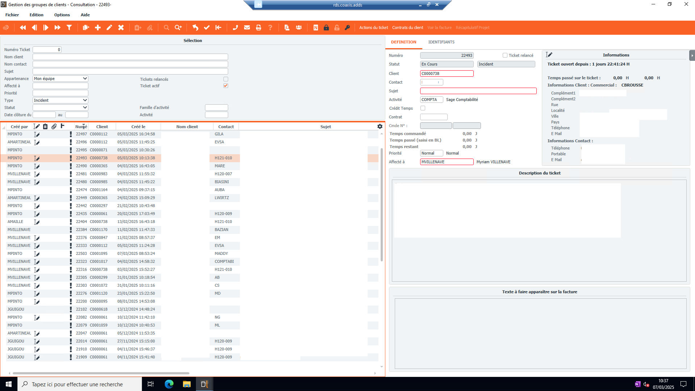
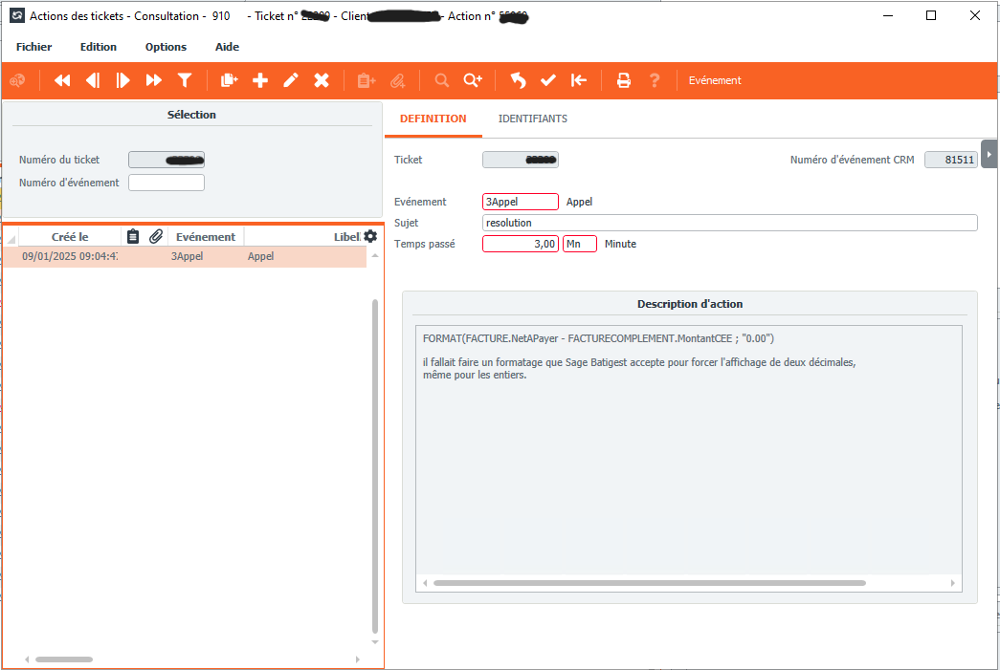

Hotline et orientation des clients dans le service concerné
Gestion et Suivi des Tickets
Cette interface permet aux équipes de support de suivre et de traiter efficacement les demandes des clients. Chaque ticket contient des informations détaillées sur l'événement, le sujet, le temps passé, ainsi qu'une description de l'action effectuée.
Fonctionnalités principales :
- Création et suivi des tickets clients.
- Historique des actions effectuées.
- Gestion du temps passé sur chaque demande.
- Interface intuitive pour une prise en charge rapide.
Cette solution améliore la communication entre les clients et l'équipe technique, assurant un service efficace et organisé.

Problème rencontré :
Une cliente rencontrait un problème d'affichage des montants sur ses factures. Lorsqu'elle saisissait 132,82€ dans le logiciel, celui-ci imprimait 32,8€.
Après investigation, le problème provenait d'un conflit dans le modèle d'édition.
La solution a été d'ajouter une formule forçant l'affichage de deux décimales,
garantissant ainsi une précision correcte des montants.
Si je ne peux pas résoudre le problème :
Si je ne parviens pas à résoudre le problème, ou que ce n'est pas mon domaine, je crée un ticket et le transfère à une personne compétente. j’informe l’équipe concernée en envoyant un message sur teams pour signaler la création du ticket.